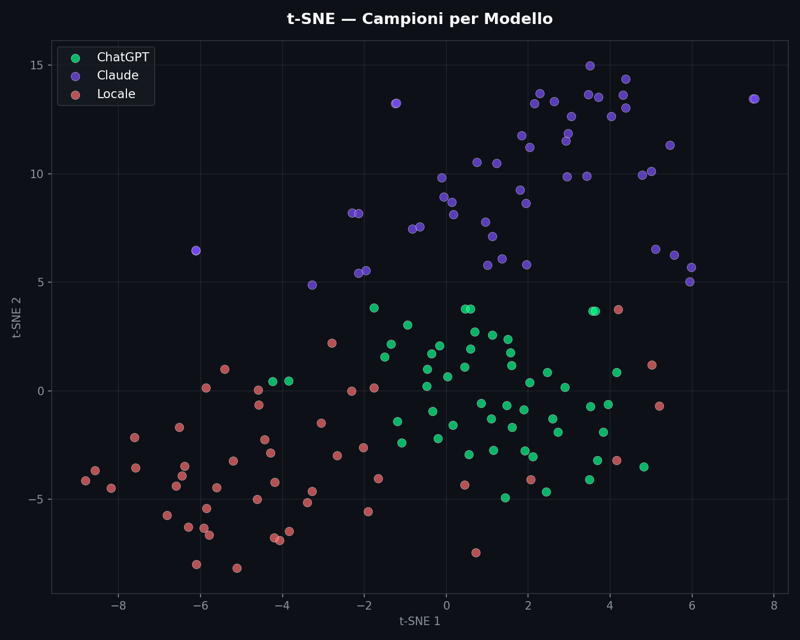
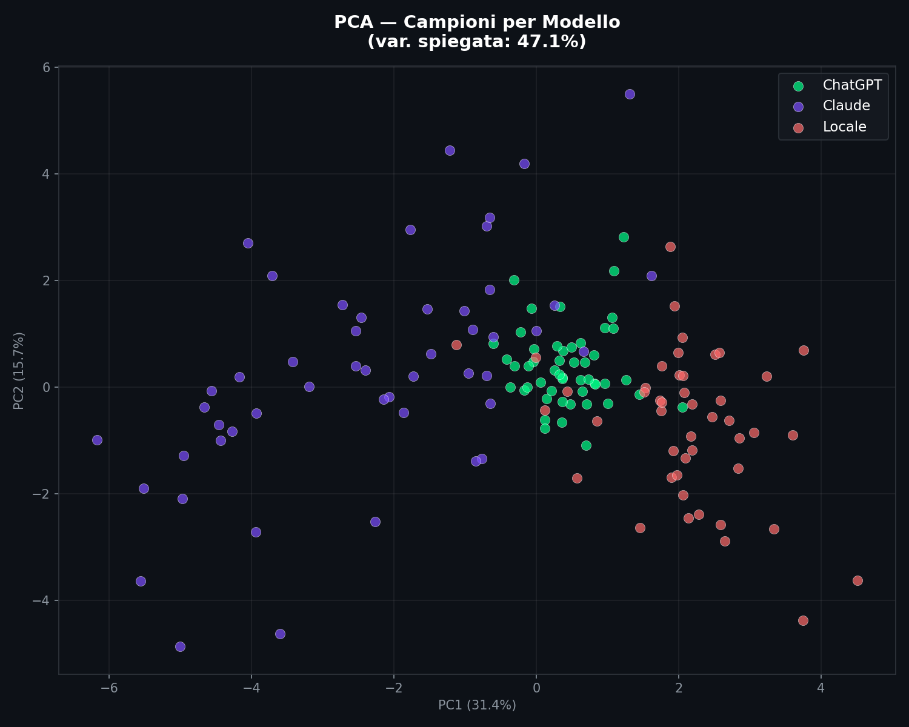
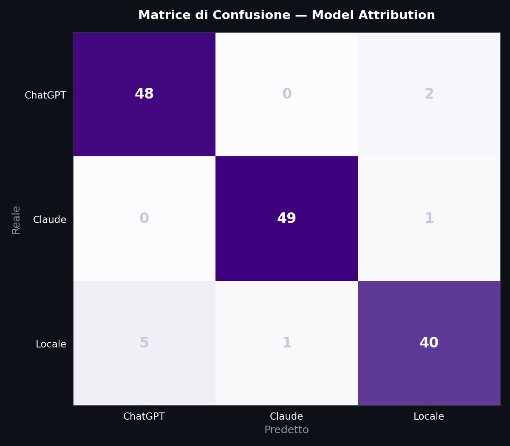
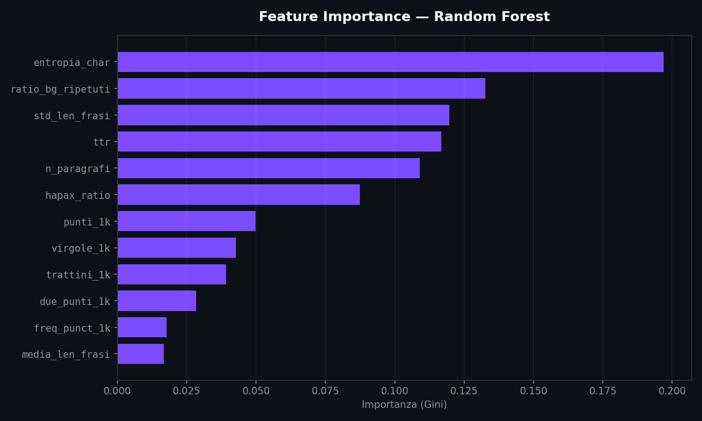
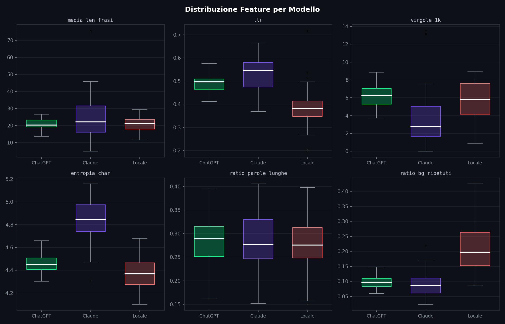
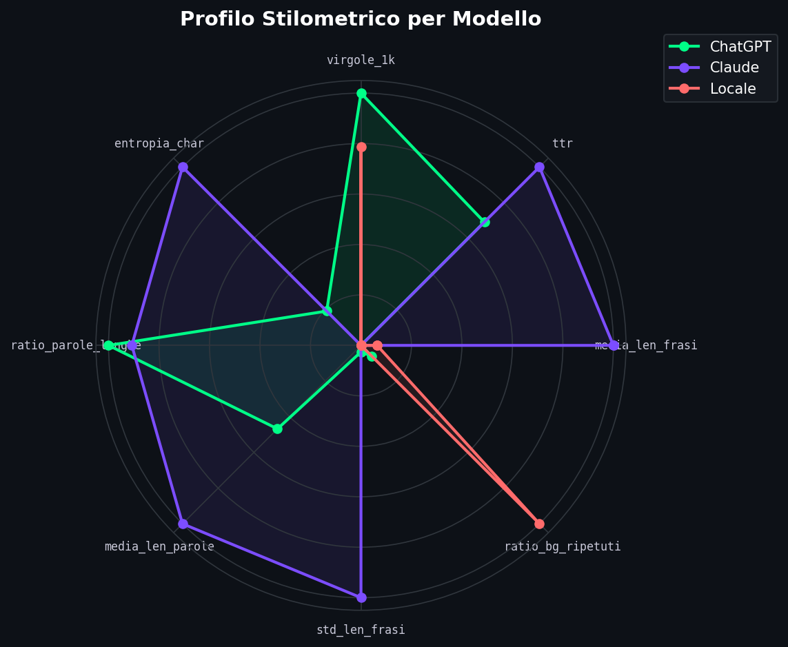
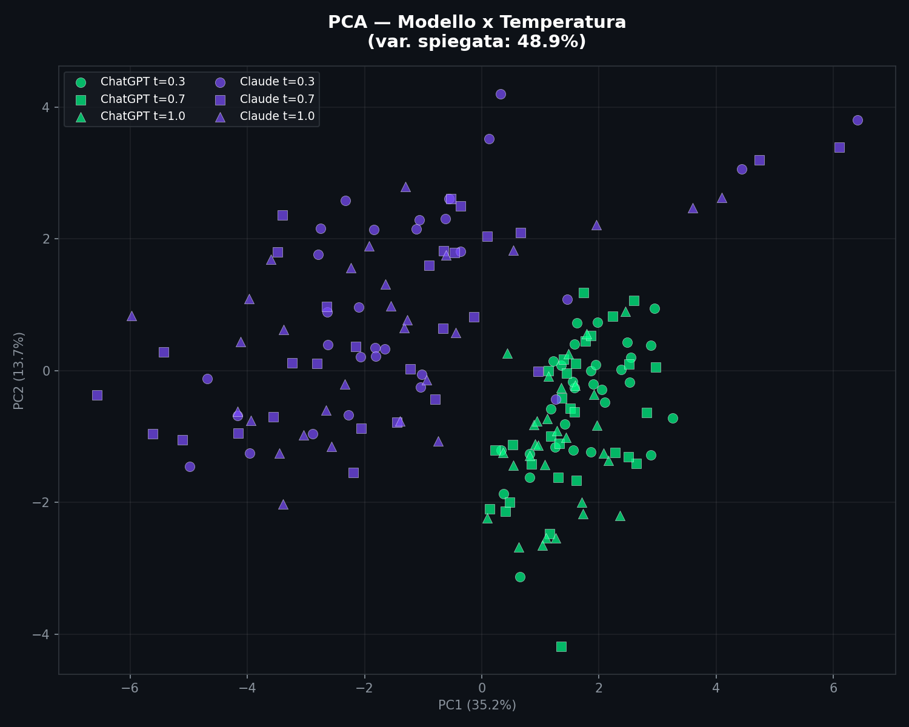
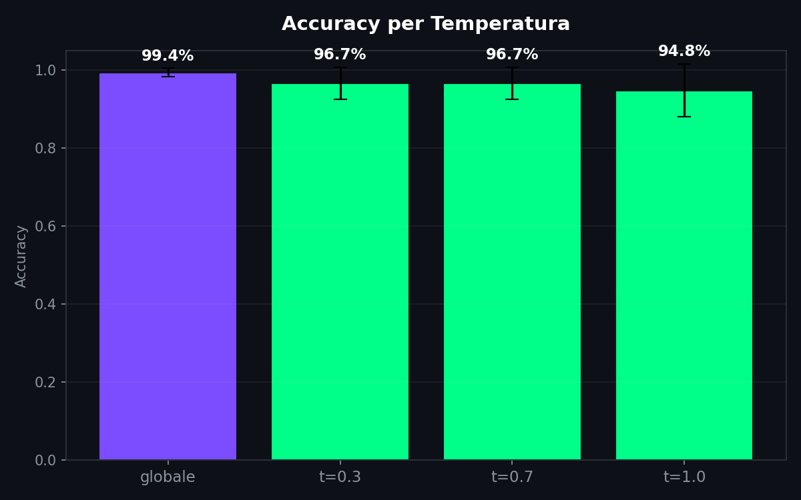
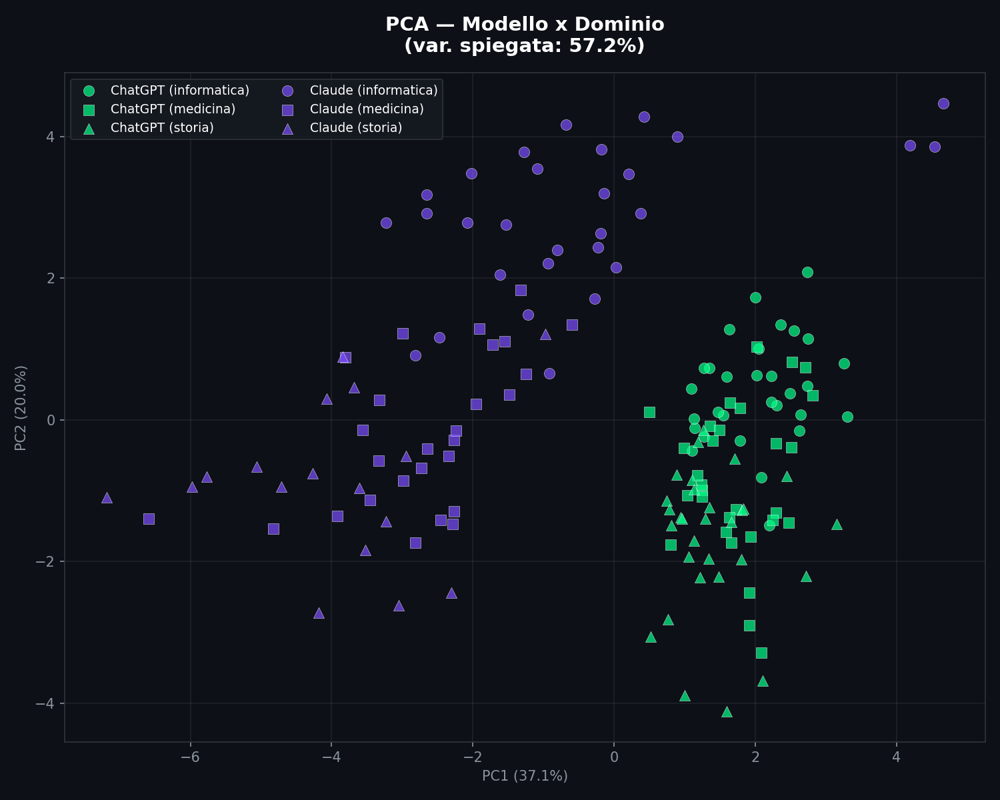
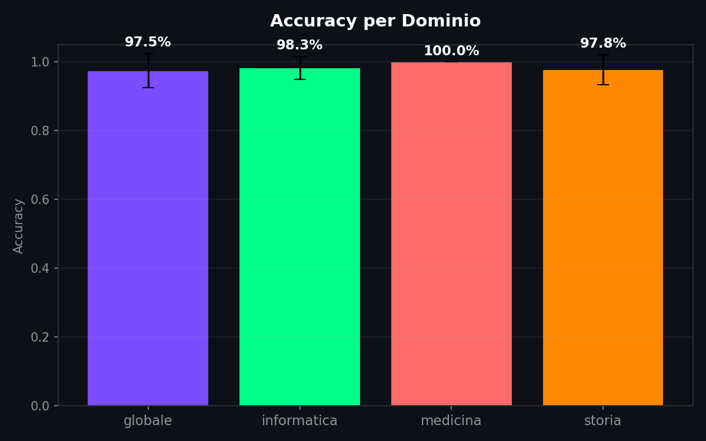

// Il Detector
Sezione 00. La bugia che tutti compranoPrimo esperimento. Prendo un paragrafo da Se questo e' un uomo di Primo Levi, lo incollo in un detector online. Quelli che promettono di dirti se un testo l'ha scritto un umano o una macchina.
Risultato: 96% probabilita' AI-generated.
Primo Levi. Uno che ha scritto quelle pagine in un campo di concentramento. Il detector dice che e' una macchina.
Secondo esperimento. Prendo un testo generato da GPT-4o, gli cambio tre parole, aggiungo un refuso. Risultato: 12% probabilita' AI. Umano, dice il detector. Basta un errore di battitura per fregarlo.
Questi strumenti hanno un problema che nessun aggiornamento del modello puo' risolvere. Il problema e' nella domanda stessa.
// Perche' Non Funziona
Sezione 01. Il problema formaleUn detector di testo AI cerca di rispondere a una domanda binaria: questo testo l'ha scritto un umano o una macchina? E la risponde guardando feature statistiche del testo: perplexity, distribuzione dei token, burstiness (varianza nella complessita' delle frasi).
Il problema e' che le distribuzioni si sovrappongono. Un umano che scrive in modo ordinato produce testo con perplexity bassa, uguale a quella di un LLM. Un LLM con temperature alta produce testo con perplexity alta, uguale a quella di un umano. La zona grigia non e' un'eccezione: e' la norma.
In termini pratici: per ogni feature che scegli (perplexity, burstiness, type-token ratio, qualsiasi cosa) esistono testi umani che hanno lo stesso valore di testi generati. Le due distribuzioni non sono separabili nel caso generale. Non esiste un classificatore che generalizzi in modo affidabile su tutti i testi, in tutti i domini, con tutti i modelli. Funziona solo in condizioni ristrette. E le condizioni ristrette sono quelle del vendor che te lo vende, non le tue.
I detector commerciali aggirano il problema tarandosi per avere pochi falsi positivi (alta precisione, basso recall). In pratica: quando dicono "AI" hanno spesso ragione, ma lasciano passare la maggior parte dei testi generati. E quando sbagliano nella direzione opposta, marchiano un umano come macchina. In un contesto scolastico o legale, quel falso positivo rovina una persona.
Il punto. Il rilevamento AI sul singolo testo e' un problema mal posto. Le distribuzioni si sovrappongono, la ground truth non esiste (non puoi dimostrare che un testo e' stato scritto senza assistenza AI), e qualsiasi soglia produce errori in entrambe le direzioni. I detector funzionano come i test antidoping con falsi positivi: quando distruggono la carriera di un atleta pulito, il 99% di accuratezza non lo consola.
Il watermarking e' l'unico approccio teoricamente solido: il provider inserisce un pattern statistico nel testo durante la generazione, e il detector lo cerca. Funziona perche' il segnale e' intenzionale, non inferito. Il limite e' che richiede la cooperazione del provider. Se il modello e' locale, o se il provider non implementa watermarking, non c'e' nulla da cercare.
// La Domanda Giusta
Sezione 02. Non chi, ma qualeE se cambiassimo domanda?
Dimentica "umano o macchina". Chiediti: quale macchina. Se hai un corpus di testi e sai che sono stati generati da modelli diversi, riesci a distinguere chi ha scritto cosa?
La risposta e' si'. E il motivo e' sorprendentemente banale.
Ogni modello ha dei tic. Sono il prodotto del training data, dell'architettura, dell'RLHF, del tokenizer. I dati lo confermano: Claude produce frasi mediamente da 24.9 parole, ChatGPT da 20.7, Llama da 21.0. Il type-token ratio di Claude e' 0.53, quello di Llama 0.39. Llama si ripete molto di piu'. ChatGPT mette 6.2 virgole per 1000 caratteri, Claude 3.7. Sono differenze piccole sul singolo testo, ma su un corpus di 50 campioni diventano pattern stabili e misurabili.
Questa e' model attribution: non rilevamento, ma attribuzione. La stessa cosa che la stilometria fa con gli autori umani da due secoli. Cambia solo il soggetto.
La distinzione chiave. Il rilevamento AI (umano vs macchina) e' un problema di classificazione binaria con overlap distribuzionale, inaffidabile sul singolo campione. La model attribution (quale modello tra N) e' un problema di classificazione multiclasse su feature diverse e misurabili. Funziona, a patto di avere abbastanza campioni e le feature giuste.
// Il Laboratorio
Sezione 03. Tre modelli, un prompt, 50 ripetizioniHo preso tre modelli: Claude (claude-sonnet-4-20250514, API Anthropic), ChatGPT (gpt-4o, API OpenAI), e un modello locale via Ollama (Llama 3.1, 8B parametri, quantizzato Q4_K_M, gira sulla mia macchina). Ho preparato 25 prompt tecnici, tutti sullo stesso dominio (informatica), tutti con lo stesso livello di dettaglio richiesto. Cose tipo "spiega come funziona il protocollo TCP" o "descrivi il funzionamento di una hash table".
Ogni prompt l'ho mandato a tutti e tre i modelli. Due passaggi per prompt, quindi 50 campioni per modello. 150 testi generati, 146 validi dopo aver scartato quelli troppo corti per un'analisi stilometrica decente. Stessa temperatura di default per tutti. Stessa lunghezza massima (1024 token).
Il primo script (01_genera_campioni.py) fa il lavoro sporco: chiama le tre API in sequenza, salva tutto in un JSON con il testo, il prompt, il tempo di risposta, la lunghezza.
| 1 | # genera un campione con Claude |
| 2 | import anthropic |
| 3 | client = anthropic.Anthropic() |
| 4 | resp = client.messages.create( |
| 5 | model='claude-sonnet-4-20250514', |
| 6 | max_tokens=1024, |
| 7 | messages=[{'role': 'user', 'content': prompt}], |
| 8 | ) |
| 9 | testo = resp.content[0].text |
| 10 | |
| 11 | # genera un campione con ChatGPT |
| 12 | import openai |
| 13 | client = openai.OpenAI() |
| 14 | resp = client.chat.completions.create( |
| 15 | model='gpt-4o', |
| 16 | max_tokens=1024, |
| 17 | messages=[{'role': 'user', 'content': prompt}], |
| 18 | ) |
| 19 | testo = resp.choices[0].message.content |
| 20 | |
| 21 | # genera un campione con Ollama (locale) |
| 22 | import requests |
| 23 | resp = requests.post('http://localhost:11434/api/generate', json={ |
| 24 | 'model': 'llama3.1', |
| 25 | 'prompt': prompt, |
| 26 | 'stream': False, |
| 27 | }) |
| 28 | testo = resp.json()['response'] |
Zero configurazione speciale, zero system prompt, zero trucchi. Stessa domanda, tre risposte, vediamo chi scrive come.
// Le Feature
Sezione 04. 16 numeri per smontare un testoIl secondo script (02_estrai_features.py) prende ogni testo e lo riduce a 16 numeri. Niente modelli neurali, niente embedding, niente magia. Solo statistica descrittiva su stringhe di caratteri.
| Feature | Cosa misura | Perche' conta |
|---|---|---|
media_len_frasi | Parole per frase, media | I modelli hanno lunghezze di frase caratteristiche |
std_len_frasi | Deviazione standard lunghezza frasi | Quanto varia il ritmo della scrittura |
ttr | Type-token ratio | Ricchezza del vocabolario: parole diverse / parole totali |
hapax_ratio | Parole usate una sola volta / vocabolario | Tendenza a ripetere vs introdurre nuovi termini |
entropia_char | Entropia di Shannon sui caratteri | Complessita' della distribuzione dei caratteri |
virgole_1k | Virgole per 1000 caratteri | Stile di punteggiatura: ogni modello ha una frequenza diversa |
punti_1k | Punti per 1000 caratteri | Frasi piu' corte = piu' punti |
due_punti_1k | Due punti per 1000 caratteri | Stile enumerativo, spiegazioni |
punto_virgola_1k | Punto e virgola per 1000 caratteri | Alcuni modelli li usano molto piu' di altri |
trattini_1k | Trattini per 1000 caratteri | Incisi, parentetiche |
ratio_parole_lunghe | % parole con 8+ caratteri | Tendenza a usare termini tecnici o complessi |
media_len_parole | Lunghezza media delle parole | Correlato con il registro linguistico |
ratio_bg_ripetuti | % bigrammi che compaiono piu' di una volta | Quanto il modello si ripete a livello di coppie di parole |
ratio_conj_start | % frasi che iniziano con congiunzione | Pattern sintattico di apertura ("E", "Ma", "However"...) |
freq_punct_1k | Punteggiatura totale per 1000 caratteri | Densita' complessiva di punteggiatura |
n_paragrafi | Numero di paragrafi | Strutturazione del testo |
L'entropia di Shannon la calcolo sui singoli caratteri. E' la stessa formula del malware article, applicata a un problema diverso:
Dove p(ci) e' la frequenza relativa del carattere i-esimo nel testo. Un testo con vocabolario variegato ha entropia alta. Un testo che ripete le stesse strutture ha entropia bassa. I modelli hanno profili di entropia diversi perche' i tokenizer e il training producono distribuzioni di caratteri diverse.
Il type-token ratio (TTR) e' il rapporto tra parole distinte e parole totali. Se un testo di 500 parole usa 300 parole diverse, TTR = 0.6. Nei nostri dati Llama ha il TTR piu' basso (0.39): ripete molto. Claude il piu' alto (0.53). ChatGPT sta in mezzo (0.49). Il TTR cattura una differenza reale nel modo in cui i modelli gestiscono il vocabolario, e quella differenza e' stabile da un prompt all'altro.
| 1 | def shannon_entropy(testo): |
| 2 | """Entropia di Shannon sui caratteri.""" |
| 3 | freq = Counter(testo) |
| 4 | n = len(testo) |
| 5 | return -sum((c / n) * math.log2(c / n) for c in freq.values()) |
| 6 | |
| 7 | def bigrammi(parole): |
| 8 | """Coppie di parole consecutive.""" |
| 9 | return [(parole[i], parole[i+1]) for i in range(len(parole) - 1)] |
| 10 | |
| 11 | # il type-token ratio: parole diverse / parole totali |
| 12 | parole = re.findall(r'\b\w+\b', testo.lower()) |
| 13 | ttr = len(set(parole)) / len(parole) |
// I Cluster
Sezione 05. Tre nuvole che non si toccanoIl terzo script (03_clustering.py) prende le 16 feature, le standardizza (z-score), e le proietta in 2D con t-SNE per la visualizzazione e PCA per la varianza spiegata.
Il risultato e' questo.

Tre nuvole. Separate. I punti viola sono Claude. I verdi sono ChatGPT. I rossi sono il modello locale. Qualche punto ai bordi si avvicina, ma i centroidi sono lontani. Attenzione pero': il t-SNE e' ottimo per visualizzare cluster, ma distorce le distanze globali e puo' creare separazioni apparenti dove non ci sono. Per questo serve la PCA come verifica.
La proiezione PCA racconta la stessa storia, e questa volta con numeri interpretabili:

Le prime due componenti principali catturano il 47.1% della varianza (PC1: 31.4%, PC2: 15.7%). La separazione e' visibile anche qui. La separazione osservata e' coerente tra proiezioni non lineari (t-SNE) e lineari (PCA), il che riduce il rischio di artefatti di visualizzazione. E' nel dato.
Perche' funziona. Ogni modello ha un profilo stilometrico stabile. Claude fa frasi da 25 parole in media con poca punteggiatura. ChatGPT ne fa da 21 ma con il 67% di virgole in piu'. Llama ripete il doppio dei bigrammi rispetto a Claude (0.21 vs 0.09). Queste differenze emergono dal training, dal tokenizer, dall'RLHF. Sono una firma.
// Il Classificatore
Sezione 06. Random Forest, 5-fold cross-validationPer quantificare la separazione uso un Random Forest con 200 alberi e validazione incrociata a 5 fold. Niente di esotico. Niente deep learning. Un classificatore che gira in meno di un secondo su un laptop.

Accuracy: 93.8% in cross-validation a 5 fold. Claude e' il piu' riconoscibile (f1 = 0.98). ChatGPT sta a 0.93. Llama a 0.90, con qualche confusione verso ChatGPT, probabilmente per convergenza stilistica nelle feature osservate. Nove campioni sbagliati su 146. Una logistic regression sulle stesse feature scende intorno all'85%, il che suggerisce che la separazione non e' puramente lineare e il Random Forest serve davvero. Su un problema di rilevamento binario umano/macchina questi numeri sarebbero fantascienza.
Le feature che contano di piu' le decide il Random Forest in base al Gini importance:

Nel nostro dataset, l'entropia dei caratteri risulta la feature piu' discriminante (importance 0.197), seguita dal rapporto di bigrammi ripetuti (0.133), dalla deviazione standard delle frasi (0.120) e dal type-token ratio (0.117). La punteggiatura che mi aspettavo dominante in realta' viene dopo. Il Gini importance del Random Forest e' instabile: cambiando il seed i pesi si rimescolano un po'. Ma le prime quattro feature restano sempre le stesse.
Non serve un modello neurale per risolvere questo problema. Un Random Forest su 16 feature numeriche basta. Il motivo e' che non stai cercando un segnale debole in un mare di rumore. Stai misurando distanze tra distribuzioni che sono realmente diverse. I cluster esistono nei dati. Il classificatore li trova perche' ci sono.
// I Profili
Sezione 07. L'impronta di ogni modelloLe distribuzioni delle feature chiave mostrano dove ogni modello si distingue.

E il radar chart sintetizza i profili stilometrici medi dei tre modelli su un unico grafico:

Ogni modello ha una forma diversa. Claude ha l'entropia dei caratteri piu' alta (4.85 vs 4.46 di ChatGPT e 4.37 di Llama): distribuzione di caratteri piu' variegata, meno pattern ripetitivi. Llama ha il tasso di bigrammi ripetuti piu' che doppio rispetto agli altri (0.21 vs 0.09 e 0.10). Si ripete molto. ChatGPT sta nel mezzo su quasi tutto, ma mette piu' virgole di tutti (6.2 per 1000 caratteri).
Il radar lo rende evidente: tre forme diverse, tre firme diverse. Sono le stesse differenze che un lettore attento noterebbe dopo aver letto 50 testi di ciascuno, ma lo script le misura in 3 secondi e le quantifica.
// Perche' Importa
Sezione 08. L'uso correttoLa model attribution non serve a dare voti a scuola e non serve in tribunale. Serve per l'analisi aggregata.
Esempi concreti. Hai un corpus di 10,000 recensioni e vuoi sapere se una percentuale anomala e' stata generata dallo stesso modello. Stai facendo content forensics su una campagna di disinformazione e vuoi capire se i testi vengono da un'unica fonte o da piu' modelli diversi. Vuoi verificare se un servizio che dichiara di usare GPT-4 sta in realta' rispondendo con un modello locale piu' economico.
In tutti questi casi non ti interessa il singolo testo. Ti interessa il pattern statistico sul corpus. E sul corpus, il metodo funziona.
Cosa NON fa. Questo metodo non ti dice se un singolo testo e' stato scritto da un umano o da una macchina. Nessun metodo puo' farlo in modo affidabile. Se qualcuno ti vende un tool che dice "99% AI-generated" su un singolo paragrafo, ti sta vendendo una bugia statistica. L'unica cosa che puoi misurare con certezza e' la somiglianza tra un testo e il profilo noto di un modello specifico. E per farlo ti serve un riferimento, non un oracolo.
// Riproduci Tutto
Sezione 09. Cinque script, un terminaleTutto il codice e' su GitHub, nella cartella scripts/il-detector-mente/. Cinque script, da eseguire in ordine.
| Script | Cosa fa | Input | Output |
|---|---|---|---|
01_genera_campioni.py | Genera 150 testi da Claude, ChatGPT e Llama (Ollama) | API key + Ollama | campioni.json |
02_estrai_features.py | Estrae 16 feature stilometriche da ogni testo | campioni.json | features.csv |
03_clustering.py | PCA, t-SNE, Random Forest, 6 grafici | features.csv | 01-06_*.png, risultati.json |
04_test_temperatura.py | Test robustezza: 3 temperature, solo Claude + ChatGPT | API key | 07-08_*.png, risultati_temperatura.json |
05_test_dominio.py | Test robustezza: 3 domini, solo Claude + ChatGPT | API key | 09-10_*.png, risultati_dominio.json |
| 1 | # installa le dipendenze |
| 2 | pip install anthropic openai requests pandas scikit-learn matplotlib numpy |
| 3 | |
| 4 | # configura le API key |
| 5 | export ANTHROPIC_API_KEY="sk-ant-..." |
| 6 | export OPENAI_API_KEY="sk-..." |
| 7 | |
| 8 | # assicurati che Ollama giri con il modello locale |
| 9 | ollama pull llama3.1 |
| 10 | ollama serve & |
| 11 | |
| 12 | # pipeline base (3 modelli) |
| 13 | cd scripts/il-detector-mente |
| 14 | python3 01_genera_campioni.py # riprende da dove era se interrotto |
| 15 | python3 02_estrai_features.py # <1s |
| 16 | python3 03_clustering.py # ~5s |
| 17 | |
| 18 | # test di robustezza (solo API, senza Ollama) |
| 19 | python3 04_test_temperatura.py # ~5 min |
| 20 | python3 05_test_dominio.py # ~5 min |
L'output finisce in output/: i campioni JSON, le feature CSV, i 10 grafici PNG, e tre file risultati*.json con le metriche dei classificatori. Tutti gli script salvano dopo ogni campione e riprendono da dove erano se interrotti. Se vuoi cambiare il modello locale, basta export OLLAMA_MODEL=mistral prima di lanciare il primo script.
// I Limiti
Sezione 10. Quello che questo esperimento non dimostraBisogna essere onesti su cosa abbiamo misurato e cosa no.
Il dataset e' pulito. Troppo pulito, se vuoi. Stesso dominio (informatica), stessi prompt, stessa temperatura, stessa lunghezza massima. Queste condizioni aiutano il clustering. Un dataset con prompt eterogenei, domini misti (medicina, legge, narrativa) e temperature diverse potrebbe degradare la separazione. I modelli cambiano stile quando cambiano contesto, e non e' scontato che la firma stilometrica resti stabile.
Il Random Forest ha un'accuracy del 93.8% su questi dati. Su dati diversi potrebbe scendere. La feature importance che ho mostrato vale per questo dataset: con 146 campioni e il Gini del Random Forest, cambiando seed le importanze ballano un po'. Le top 4 restano stabili, il resto si rimescola.
Un reviewer serio direbbe: "stai separando condizioni, non modelli". E avrebbe parzialmente ragione. Quindi l'ho fatto: ho preso Claude e ChatGPT (senza Ollama, perche' genera campioni lentamente e qui servono volumi) e ho testato due dimensioni: temperatura e dominio.
// La Temperatura Cambia Qualcosa?
Sezione 11. Stessi prompt, tre temperatureStesso set di prompt tecnici, due modelli, tre temperature: 0.3 (fredda, deterministica), 0.7 (default), 1.0 (calda, creativa). 30 campioni per combinazione, 180 testi in totale.
La domanda: alzando la temperatura il modello diventa meno riconoscibile? La risposta breve e' no.

Nel grafico PCA il colore e' il modello, il marker e' la temperatura (cerchio = 0.3, quadrato = 0.7, triangolo = 1.0). I due modelli restano separati indipendentemente dalla temperatura. I punti a temperatura alta si sparpagliano un po' di piu', hanno piu' varianza interna, ma non invadono il cluster dell'altro modello.

A temperatura 1.0 l'accuracy scende un po' (94.9% contro 96.7% a temperature basse). Ha senso: con temperatura alta il modello campiona token meno probabili, il testo diventa piu' imprevedibile, e la firma stilometrica si sfuma. Ma non scompare. Neanche alla temperatura massima i due modelli si confondono davvero.
// Il Dominio Cambia Qualcosa?
Sezione 12. Informatica, medicina, storiaSecondo test. Stessi due modelli, stessa temperatura di default, tre domini completamente diversi: informatica (il dominio originale), medicina (farmacologia, fisiopatologia), storia (dall'Impero Romano alla Guerra Fredda). 30 campioni per combinazione, 180 testi.
Se la firma stilometrica fosse un artefatto del dominio, qui dovrebbe rompersi. Spoiler: non si rompe.

Il colore e' il modello, il marker e' il dominio (cerchio = informatica, quadrato = medicina, triangolo = storia). I cluster per modello restano compatti. I punti dello stesso modello su domini diversi si mischiano tra loro, non con l'altro modello. La firma e' del modello, non dell'argomento.

La medicina e' al 100%. Probabilmente perche' il vocabolario medico e' cosi' specializzato che ogni modello lo gestisce in modo ancora piu' caratteristico del solito. La storia sta al 97.8%, l'informatica al 98.3%. Tutti sopra il 97%.
Il test di robustezza regge. Nel range testato, la firma stilometrica appare robusta rispetto a variazioni di temperatura e dominio. Claude scrive come Claude che parli di TCP o della Peste Nera. ChatGPT scrive come ChatGPT che lo metti a 0.3 o a 1.0. Le differenze sono nel modo di costruire le frasi, non in cosa dicono le frasi. Non escludiamo che alcune feature catturino indirettamente differenze di vocabolario specifiche del dominio, amplificando la separazione. Il 100% sulla medicina potrebbe essere un segnale di questo.
Detto questo: abbiamo testato due modelli, tre temperature, tre domini. Il caso a tre modelli con tutte le combinazioni richiederebbe un ordine di grandezza in piu' di campioni e un modello locale che non ci mette minuti per ogni risposta. E' un limite pratico, non teorico. Il codice per farlo c'e' gia'.
// Il Punto
Sezione 13. Tirando le sommeIl rilevamento AI sul singolo testo piace ai venditori di SaaS e ai presidi che vogliono beccare gli studenti. Ha un problema di fondo: non esiste un classificatore che generalizzi in modo affidabile su tutti i testi. Le distribuzioni si sovrappongono, la soglia e' arbitraria, e i falsi positivi rovinano persone che non c'entrano niente.
La model attribution e' un problema diverso, e piu' trattabile. Con 16 feature statistiche e un Random Forest separiamo Claude, ChatGPT e Llama al 93.8% in cross-validation. Nessun modello neurale, nessuna GPU. La firma stilometrica dei modelli esiste, e' misurabile, e regge almeno nelle condizioni che abbiamo testato.
L'uso corretto e' l'analisi aggregata. La domanda da fare non e' "chi ha scritto questo testo?", e' "questi 500 testi condividono un profilo stilometrico, e quel profilo corrisponde a un modello che conosciamo?".
"Il detector cerca un confine tra umano e macchina. Il confine non esiste. Ma i modelli lasciano tracce, e quelle sono misurabili."
16 feature. 146 campioni. 93.8% accuracy. I numeri bastano, se fai la domanda giusta.
Gli script sono nella repo. Se vuoi ripetere l'analisi con modelli diversi, cambi tre stringhe e rilanci.